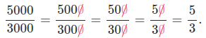

SA: I don't like cutting so much!
My aunt's wife has prepared a giant pork crackling cake, and they've asked me to cut it into portions. My mother really likes very small pieces, "bocado" as she says, and wants to take many. She told me to cut it into 120 portions, so that each person can take 12. My dad, who knows that the knife doesn’t cut very well because it needs sharpening, told me not to worry and to make only 60 portions, so each person can take 6. My sister even told me to make just 30 portions and have each person take 3.
I, who don’t like cutting, made 10 big pieces. If anyone wants a smaller piece, they can cut their own.
\[ \frac {12}{120} \stackrel{\text{(:2)}}{=} \frac {6}{60} \stackrel{\text{(:2)}}{=} \frac {3}{30} \stackrel{\text{(:3)}}{=} \frac 1 {10} \]
Amplifying and Simplifying. The Irreducible Fraction:
For a fraction, there are two ways to obtain equivalent fractions (representing the same number):
Amplifying:
We multiply both the numerator and the denominator by the same number. We can multiply by any number we want.
We’ll use this to reduce to a common denominator when adding/subtracting fractions or ordering them.
Simplifying:
We divide both the numerator and the denominator by the same number. For both divisions to be whole numbers, we can only use common divisors.
The most we can simplify is by dividing by the Greatest Common Divisor (GCD). The fraction obtained is called an irreducible fraction (because it can’t be simplified any further).
At the end of any operation, we must always simplify.
A very common simplification is dividing by 10, i.e., "cross out zeros on top and bottom." For example:
Do this activity to learn how to amplify and simplify:
https://www.geogebra.org/m/V7hhQabv (Ventana nueva)
- Click the Amplify and Simplify buttons to see the explanations.
- Move the ✂ drawings to choose which portions we take, ☊ to see into how many we divide, and ❂ to decide into how many we divide again.